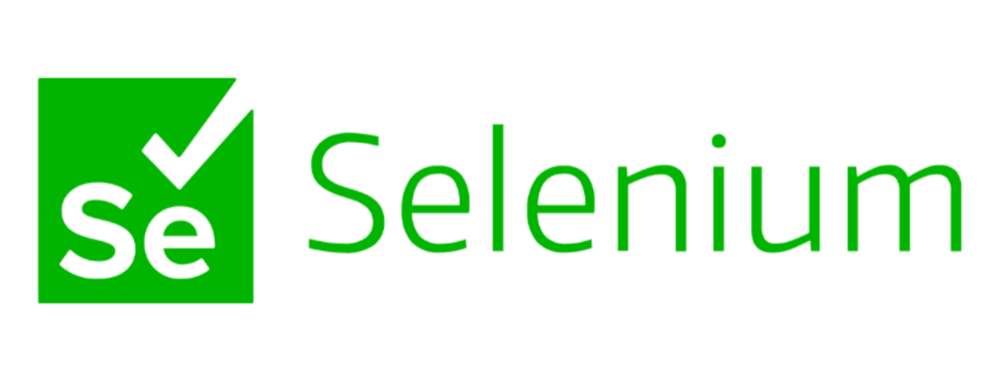

Test automation tools
|  | Web browsers can be automated using the open-source tool Selenium. It offers a solitary interface that makes it possible to create test scripts in a variety of programming languages, including Ruby, Java, NodeJS, PHP, Perl, Python, and C# (BrowserStack, 2023). Selenium is the most widely used open source and freeware automation tool. Selenium has many advantages when it comes to test automation. Importantly, it supports recording and playback for web application testing and can execute multiple scripts across different browsers. Cross-industry business sectors can benefit from Selenium Test Automation's advantages (Cigniti, 2018). |
 |
QAs can run automated app testing on various platforms, including Android, iOS, and Windows, thanks to the open-source Appium framework. Using the same API, testers can create cross-platform test scripts for platforms like iOS, Windows, and Android using the flexible Appium framework. This will save QAs time and effort by allowing them to use the same code for iOS and Android (BrowserStack, 2023). |
|
A testing tool that supports Behaviour Driven Development is called Cucumber (BDD). It provides a way to write tests that anyone, regardless of technical ability, can understand. Before developers write their code in BDD, users (business analysts, product owners) first create scenarios or acceptance tests that describe the behaviour of the system from the perspective of the customer. Cucumber is involved by business stakeholders who struggle to read code is beneficial and its user experience is the main focus of the Cucumber Testing tool. The way tests are written makes it simpler to reuse code in the tests as well as easy and quick to set up and carry out (Guru99.com, 2019). |
|
|
Web UI, API, mobile, and desktop testing are all seamlessly automated by the cloud-based AI-powered Codeless Test Automation platform known as ACCELQ. Fortune 500 companies from various industry verticals around the world who use ACCELQ to significantly advance their automation goals. ACCELQ has been shown to enable alignment with Continuous Delivery by accelerating automation development by three times and reducing maintenance by seventy percent, respectively (Guru99.com, 2019). |
|
|
100% no-code and intelligent test automation is provided by Avo Assure. Users can test intricate, end-to-end business processes spanning web, mobile, desktop, mainframes, SAP, Oracle, Salesforce, and more thanks to its support for over 200 technologies (Guru99.com, 2019). |